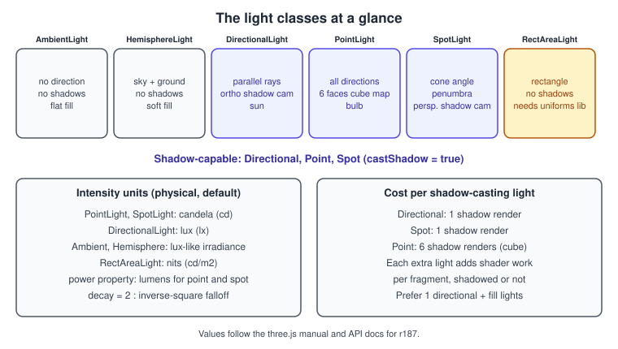
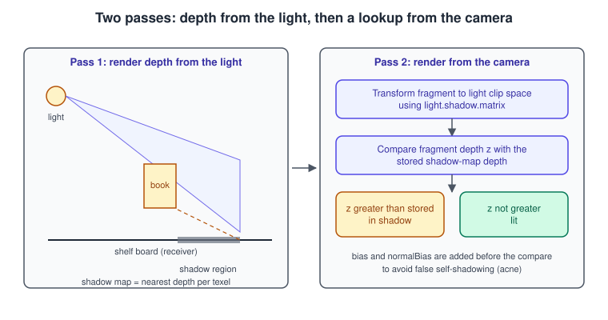
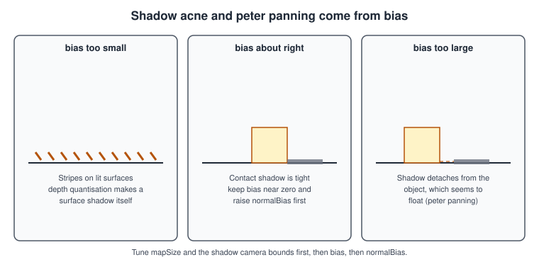

three.js Lights and Shadows
|
This content was generated with the assistance of AI and should be verified against the official documentation before being relied on in production. |
A light in three.js is an Object3D that contributes radiance to every lit material in the scene, and a shadow is an extra rendering
pass that asks, for every light that is allowed to cast one, "what does the nearest surface look like from here?". This page explains
the light classes and their units, the shadow map technique that three.js uses, every shadow option that matters, how to tune the
artifacts it produces, and what the older books on the library got wrong because the defaults changed.
The facts were checked in November 2026 against three.js r187 (npm three@0.187.0) and its manual and API documentation. Everything
here applies to the WebGLRenderer, which runs on WebGL 2 in every evergreen browser; the WebGPURenderer uses the same light classes
and similar shadow properties, with the differences noted in the final sections and in
WebGPURenderer and TSL. The examples are ES modules built with Vite,
as set up in three.js Getting Started.
In the Bookshelf three.js track this page is the step where the shelf, loaded from bookshelf.glb in Loading Models and glTF, gets a desk lamp and soft shadows. The materials that react to these lights are in Materials and PBR, and the same ideas written by hand in a shader are in Lighting in Shaders. The renderer-independent theory is in Lighting and Shading Models and Shadows and Global Illumination.
The light classes

All lights share the base properties color, intensity and the castShadow flag (honoured only by the classes that can cast one).
Lights are scene graph objects: a light can be a child of a group, moves with it, and is switched off with visible = false. Changing
the number of lights, or the number of shadow-casting lights, makes three.js recompile the affected materials, so decide the set of
lights up front and animate their intensity rather than adding and removing them.
| Class | What it models | Main options | Shadows |
|---|---|---|---|
|
Uniform light from every direction. It lifts the shadows evenly and carries no direction, so it flattens form. |
|
No |
|
A sky colour from above blended to a ground colour from below, the cheap stand-in for an outdoor or room environment. |
|
No |
|
Parallel rays from an infinitely distant source, such as the sun. Direction runs from |
|
Yes, orthographic shadow camera |
|
A bare bulb that emits in all directions from a point. |
|
Yes, six renders into a cube map |
|
A cone from a point toward a |
|
Yes, perspective shadow camera |
|
A rectangular emitter such as a window or a softbox. It replaced the old |
|
No |
Three classes need a short note.
-
RectAreaLightworks only withMeshStandardMaterialandMeshPhysicalMaterial, it has nocastShadow, and it needs a one-timeRectAreaLightUniformsLib.init()call (fromthree/addons/lights/RectAreaLightUniformsLib.js) before the first render. -
DirectionalLightandSpotLightaim at theirtargetobject. The target is not in the scene by default, so its position is(0, 0, 0)unless you set it; if you move the target, add it to the scene (scene.add( light.target )) so that its world matrix is updated. -
LightProbeand theenvironmenttexture are image-based lighting rather than punctual lights. They are covered with environment maps in Textures and Color Management.
Physically based units
Since r155 the renderer works in physical units by default, and the documentation of the light classes states them. The defaults changed in several steps (see Where the books are outdated), so older code shows lights that look much darker or brighter than the numbers suggest.
| Light | intensity unit |
Notes |
|---|---|---|
|
candela (cd) |
|
|
candela (cd) |
|
|
lux (lx) |
Independent of distance, because the source is at infinity. |
|
nits (cd per square metre) |
Brightness of the emitting surface, so a larger rectangle lights more. |
|
illuminance-like value |
No distance falloff. Treat the number as a fill level and tune it by eye. |
The falloff of point and spot lights is controlled by two properties:
-
decaydefaults to2, the physically correct inverse-square law. The documentation advises leaving it alone for physically correct rendering. Before r147 the default was1, which is why legacy scenes needed much smaller intensities. -
distancedefaults to0, which means "no limit": the light attenuates by the inverse-square law all the way to infinity. A non-zero value fades the light smoothly to zero at that distance. This is useful as a performance and art-direction cutoff but is not physically correct.
Because the unit is candela, a point light at three metres from a surface with intensity = 100 delivers about
\( 100 / 3^2 \approx 11 \) lux there. The scene scale matters: model the Bookshelf in metres (a shelf about a metre wide) and the
numbers in the example below behave sensibly. Colour management and tone mapping decide how those values turn into display values; they
are covered in Textures and Color Management.
How a shadow map works
three.js implements shadows with shadow mapping, in two passes per shadow-casting light, shown below.

-
Depth pass. The renderer draws every object with
castShadow = truefrom the point of view of the light, using the light’sshadow.camera, into a depth texture ofshadow.mapSizepixels. The result islight.shadow.map. -
Lookup in the main pass. While shading, each fragment of an object with
receiveShadow = trueis transformed into the light’s clip space withlight.shadow.matrix. Its depth is compared with the stored depth (plus the bias); if the fragment is farther, something is between it and the light, and the light’s contribution is removed.
This is the same technique taught in Shadows and Global Illumination and implemented by hand in the Bookshelf raw WebGL track. Three consequences follow, and every shadow option below is a way to manage one of them:
-
the depth texture has finite resolution, so shadows are blocky or blurry where one texel covers a large screen area;
-
the depth comparison has finite precision, so surfaces can shadow themselves ("acne") unless offset by a bias;
-
only the region covered by the shadow camera is shadowed, so it must be fitted to the scene.
Enabling shadows
Three switches must all be on, and forgetting one is the most common reason for "no shadows":
| Where | Property | Meaning |
|---|---|---|
Renderer |
|
Turns the whole feature on. It is off by default (older books used |
Light |
|
This light renders a shadow map. Only |
Caster |
|
The mesh is drawn into the shadow map. |
Receiver |
|
The mesh is darkened by shadow maps. A mesh can be both caster and receiver, which is what a book on a shelf board needs. |
The flags are per Mesh, and Group and Object3D ignore them, which matters for models loaded from glTF: set them in a traverse
loop, as in the example. The glTF format itself carries no shadow flags.
Shadow map types
renderer.shadowMap.type selects the filtering used when the map is sampled.
| Constant | Behaviour | Use it when |
|---|---|---|
|
One depth comparison per fragment: hard, aliased edges. Cheapest. |
Prototyping, or a deliberately hard-edged look. |
|
Percentage-closer filtering: several comparisons averaged, giving soft edges. The default, and since r182 it is soft as well. |
The normal choice. |
|
Deprecated with |
Do not use in new code. |
|
Variance shadow maps: blurred with |
Large soft shadows when the PCF result is too noisy. |
The shadow object
Every shadow-capable light has a light.shadow object (DirectionalLightShadow, PointLightShadow or SpotLightShadow, all derived
from LightShadow).
| Property | Default | Purpose |
|---|---|---|
|
|
Resolution of the depth texture, a |
|
depends on the light |
The camera that renders the depth pass. Directional: an |
|
|
A constant offset added to the compared depth. Small negative values such as \( -0.0005 \) remove acne. Too large and shadows detach from their casters. |
|
|
Offsets the lookup position along the surface normal. It scales with slope, so it handles grazing angles better than |
|
|
Blur width for |
|
|
Sample count for the |
|
|
With |
Fitting the shadow camera
The shadow camera is the main quality lever, because the map’s texels are spread across whatever the camera sees. A directional light’s
orthographic camera defaults to a 10 by 10 unit box (left, right, top, bottom of -5 to 5) with near = 0.5 and far = 500.
For a one metre shelf that wastes most of the resolution, so shrink it to the shelf:
const d = 1.2; // half-size of the shadowed region, metres
const cam = sun.shadow.camera;
cam.left = -d; cam.right = d;
cam.top = d; cam.bottom = -d;
cam.near = 0.5; cam.far = 8;
cam.updateProjectionMatrix(); // required after changing the frustumThe most useful debugging tool is the camera helper:
import { CameraHelper } from 'three';
const helper = new CameraHelper( sun.shadow.camera );
scene.add( helper );
// after changing the frustum:
sun.shadow.camera.updateProjectionMatrix();
helper.update();Source: three.js manual: Shadows
The picture of the frustum shows at once whether a caster is outside it (no shadow at all), whether far clips the receiver, and how
much of the box is empty.
Bias, acne and peter panning

Tune in this order and stop as soon as the artifact is gone:
-
Fit the shadow camera and
mapSizeto the scene (above). -
Raise
normalBiasin small steps (0.01 to 0.05 for a scene in metres). -
If acne remains on flat surfaces, add a small negative
bias(for example-0.0005). -
If shadows float away from objects, the offsets are too large; lower them.
A related trick is material.shadowSide: rendering back faces into the map (THREE.BackSide) moves the depth comparison away from
the lit surface and removes acne on closed meshes, at the price of leaks on thin geometry. Notice also that after r183 the
WebGPURenderer shadows were improved, so bias values that were added to hide acne there may now need to be reduced or removed.
The Bookshelf desk lamp
The complete example loads the shelf, adds a warm spot lamp that casts shadows, a weak hemisphere fill and a floor, and wires the
renderer. It assumes the Vite project from the getting-started page, with bookshelf.glb placed in the public folder so that it is
served at /bookshelf.glb.
<!doctype html>
<html lang="en">
<head>
<meta charset="utf-8" />
<meta name="viewport" content="width=device-width, initial-scale=1" />
<title>Bookshelf lights and shadows</title>
<style>
html, body { margin: 0; height: 100%; background: #111; }
canvas { display: block; width: 100%; height: 100%; }
</style>
</head>
<body>
<script type="module" src="/src/main.js"></script>
</body>
</html>import {
ACESFilmicToneMapping, Box3, CameraHelper, Color, HemisphereLight, Mesh,
MeshStandardMaterial, PCFShadowMap, PerspectiveCamera, PlaneGeometry,
Scene, SpotLight, SpotLightHelper, Vector3, WebGLRenderer,
} from 'three';
import { GLTFLoader } from 'three/addons/loaders/GLTFLoader.js';
import { OrbitControls } from 'three/addons/controls/OrbitControls.js';
const renderer = new WebGLRenderer( { antialias: true } );
renderer.setPixelRatio( Math.min( window.devicePixelRatio, 2 ) );
renderer.setSize( window.innerWidth, window.innerHeight );
renderer.toneMapping = ACESFilmicToneMapping;
// 1. Shadows must be enabled on the renderer first.
renderer.shadowMap.enabled = true;
renderer.shadowMap.type = PCFShadowMap; // soft by default since r182
document.body.appendChild( renderer.domElement );
const scene = new Scene();
scene.background = new Color( 0x15171c );
const camera = new PerspectiveCamera( 45, window.innerWidth / window.innerHeight, 0.05, 50 );
camera.position.set( 1.6, 1.3, 2.4 );
const controls = new OrbitControls( camera, renderer.domElement );
controls.target.set( 0, 0.6, 0 );
controls.update();
// 2. A weak sky/ground fill, so the shadows are not pitch black.
scene.add( new HemisphereLight( 0x9fb4d8, 0x2a2118, 0.35 ) );
// 3. The desk lamp: a SpotLight, intensity in candela, decay = 2 by default.
const lamp = new SpotLight( 0xffd9a8, 80, 0, Math.PI / 5, 0.5 );
lamp.position.set( 0.9, 1.8, 1.2 );
lamp.castShadow = true;
lamp.shadow.mapSize.set( 2048, 2048 );
lamp.shadow.camera.near = 0.5;
lamp.shadow.camera.far = 6;
lamp.shadow.bias = -0.0004;
lamp.shadow.normalBias = 0.02;
lamp.shadow.radius = 3;
scene.add( lamp );
scene.add( lamp.target ); // lets the target's matrix update
// 4. A floor that only receives shadows.
const floor = new Mesh(
new PlaneGeometry( 6, 6 ),
new MeshStandardMaterial( { color: 0x3a3f4a, roughness: 0.9 } ),
);
floor.rotation.x = -Math.PI / 2;
floor.receiveShadow = true;
scene.add( floor );
// 5. The shelf: set the shadow flags on every mesh of the loaded model.
const loader = new GLTFLoader();
const gltf = await loader.loadAsync( '/bookshelf.glb' );
gltf.scene.traverse( ( o ) => {
if ( o.isMesh ) {
o.castShadow = true;
o.receiveShadow = true;
}
} );
scene.add( gltf.scene );
// Aim the lamp at the middle of the model, whatever its size.
const box = new Box3().setFromObject( gltf.scene );
const centre = box.getCenter( new Vector3() );
lamp.target.position.copy( centre );
// Debug helpers: toggle with the "h" key.
const helpers = [ new SpotLightHelper( lamp ), new CameraHelper( lamp.shadow.camera ) ];
helpers.forEach( ( h ) => { h.visible = false; scene.add( h ); } );
window.addEventListener( 'keydown', ( e ) => {
if ( e.key === 'h' ) helpers.forEach( ( h ) => { h.visible = ! h.visible; } );
} );
window.addEventListener( 'resize', () => {
camera.aspect = window.innerWidth / window.innerHeight;
camera.updateProjectionMatrix();
renderer.setSize( window.innerWidth, window.innerHeight );
} );
renderer.setAnimationLoop( () => {
helpers.forEach( ( h ) => h.visible && h.update() );
renderer.render( scene, camera );
} );The example uses top-level await, which Vite supports for modern build targets; wrap it in an async function if your target does not.
Because the lamp, the shadow map and the flags all exist before the first frame, the first render already shows shadows and the
shaders compile once. If the shelf appears black, check the units first: a lamp of 80 candela about two metres away delivers roughly
20 lux, so a model exported in centimetres (100 times larger than expected) needs a much higher intensity or a scale of 0.01.
Static scenes: render the shadow once
A shelf that does not move needs its shadow map only once. Disable automatic updates and request a refresh when something changes:
lamp.shadow.autoUpdate = false;
lamp.shadow.needsUpdate = true; // renders the map on the next frame, then resets
// later, when a book moves:
function onBookMoved() {
lamp.shadow.needsUpdate = true;
}Source: three.js docs: LightShadow
This removes one full scene render per light per frame. For the mini game later in the track, where books fall continuously, keep
autoUpdate = true.
Point lights and cube shadows
A shadow-casting PointLight renders the scene six times into a cube-map layout, once per face, so it costs six depth passes. One lamp
of this kind can cost more than a whole directional and spot rig, and each extra shadow-casting point light multiplies the cost. A
common compromise is to light the room with a spot or a directional light that casts shadows and add point lights without shadows for
colour. distance is useful here to stop the shadow camera from rendering far geometry: it also sets the far plane of the point
light’s shadow.
import { PointLight } from 'three';
const bulb = new PointLight( 0xffe2b8, 40, 6 ); // 40 cd, cut off at 6 m, decay stays 2
bulb.position.set( 0, 2, 0 );
bulb.castShadow = true;
bulb.shadow.mapSize.set( 1024, 1024 ); // per face
bulb.shadow.bias = -0.002;
scene.add( bulb );Source: three.js docs: PointLightShadow
Area lights
RectAreaLight gives the soft, window-like highlight on glossy surfaces that point lights cannot, without shadows. It requires the
uniforms library to be initialised once and works only with the physical material family:
import { RectAreaLight } from 'three';
import { RectAreaLightUniformsLib } from 'three/addons/lights/RectAreaLightUniformsLib.js';
RectAreaLightUniformsLib.init(); // once, before the first render
const window1 = new RectAreaLight( 0xcfe6ff, 6, 1.2, 0.8 ); // colour, nits, width, height
window1.position.set( -1.5, 1.4, 0.5 );
window1.lookAt( 0, 0.8, 0 );
scene.add( window1 );Source: three.js docs: RectAreaLight
Pitfalls
| Symptom | Usual cause |
|---|---|
No shadows at all |
One of the four flags is missing (renderer, light, caster, receiver), or the caster is outside the shadow camera frustum. Show the |
Shadows only on part of the scene |
The orthographic box of a directional light is too small, or |
Stripes on every lit surface |
Acne: raise |
Shadow detached from the object |
Bias too large (peter panning) or |
Blocky shadow edges |
|
Shadow disappears when the light moves |
The light is a child of an object whose matrix is not updated, or the target is not in the scene. |
Hitch when adding a light |
Changing the number of lights recompiles materials. Create the lights at start-up. |
Model black after loading |
Intensity units and scale mismatch, or the model has only a |
Performance notes
-
Every shadow-casting directional or spot light adds one extra render of the shadow casters; a point light adds six. Limit shadow-casting lights to one or two.
-
Memory per map is about \( \text{ mapSize }^2 \times 4 \) bytes for a 32-bit depth target; a 4096 map is roughly 64 MB. Shrink the map before the camera box is fitted and you pay for resolution you do not use.
-
Mark small decorative meshes
castShadow = false, and distant or hidden onesreceiveShadow = false; both reduce work without being visible. -
Use
autoUpdate = falsefor static lighting, and prefer baked lighting (a lightmap texture) for scenery that never moves. -
The fragment cost of lights grows with the number of lights, shadowed or not; many cheap lights are better replaced by an environment map.
-
Dispose of the shadow map when removing a light:
light.dispose()releasesshadow.map, as described in Performance and Disposal.
Recent changes
| Release | Change |
|---|---|
r147 |
|
r152 |
|
r155 |
The legacy lighting mode is removed: light intensities are in physical units. |
r163 |
|
r182 |
|
r183 |
|
r186 |
|
Source: three.js Migration Guide
Where the books are outdated
The books are Learning Three.js, 2nd edition (LTJ, three.js r69) and the Three.js Cookbook (TCB, r69); WebGL: Up and Running (PAR, 2012) predates both. The concepts they teach (light types, shadow maps, bias) are still right; the code and the numbers are not.
| Book code or statement | Today |
|---|---|
|
|
|
|
|
|
|
Removed; a |
|
|
Intensities around 1 for every light, |
Candela, lux and nits with |
|
|
Global |
ES modules from |
Only |
|
See also
Lighting in Shaders writes the Lambert and Blinn-Phong model by hand, and the raw WebGL shadow pass through a framebuffer is in Framebuffers and Render to Texture. How much shadows and lights cost per frame is analysed in Performance and Debugging.
References
-
three.js manual, Lights and Shadows: https://threejs.org/manual/#en/lights, https://threejs.org/manual/#en/shadows
-
three.js API documentation: https://threejs.org/docs/pages/SpotLight.html, https://threejs.org/docs/pages/PointLight.html, https://threejs.org/docs/pages/DirectionalLight.html, https://threejs.org/docs/pages/RectAreaLight.html, https://threejs.org/docs/pages/LightShadow.html, https://threejs.org/docs/pages/WebGLRenderer.html
-
three.js Migration Guide: https://github.com/mrdoob/three.js/wiki/Migration-Guide
-
three.js releases: https://github.com/mrdoob/three.js/releases
-
Jos Dirksen, Learning Three.js, 2nd edition (Packt, 2015): https://www.packtpub.com/en-us/product/learning-threejs-the-javascript-3d-library-for-webgl-second-edition-9781784392215
-
Jos Dirksen, Three.js Cookbook (Packt, 2015): https://www.packtpub.com/product/threejs-cookbook/9781783981182